版本、来源与译文说明 · Source & translation notes
PDF Page 1PDF第1页
查看第 1 页原文、图表与公式 / Original PDF page
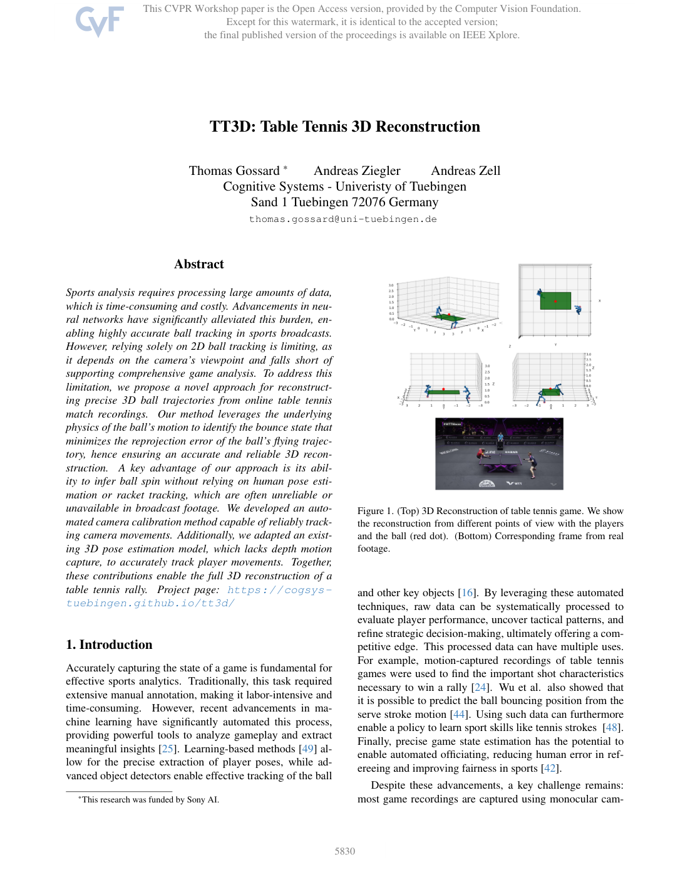
TT3D: Table Tennis 3D ReconstructionTT3D：乒乓球3D重建
Abstract摘要
Sports analysis requires processing large amounts of data, which is time-consuming and costly.
体育分析需要处理大量数据，既耗时又昂贵。
Advancements in neural networks have significantly alleviated this burden, enabling highly accurate ball tracking in sports broadcasts.
神经网络的进步显著减轻了这种负担，从而在体育转播中实现高度准确的球跟踪。
However, relying solely on 2D ball tracking is limiting, as it depends on the camera’s viewpoint and falls short of supporting comprehensive game analysis.
然而，仅仅依靠 2D 球跟踪是有局限性的，因为它取决于摄像机的视角，并且无法支持全面的比赛分析。
To address this limitation, we propose a novel approach for reconstructing precise 3D ball trajectories from online table tennis match recordings.
为了解决这个限制，我们提出了一种从在线乒乓球比赛录像中重建精确 3D 球轨迹的新方法。
Our method leverages the underlying physics of the ball’s motion to identify the bounce state that minimizes the reprojection error of the ball’s flying trajectory, hence ensuring an accurate and reliable 3D reconstruction.
我们利用球的运动物理规律，寻找使飞行轨迹重投影误差最小的触台状态，从而获得准确、可靠的三维重建。
A key advantage of our approach is its ability to infer ball spin without relying on human pose estimation or racket tracking, which are often unreliable or unavailable in broadcast footage.
我们的方法的一个关键优势是它能够在不依赖人体姿态估计或球拍跟踪的情况下推断球的旋转，而这些在转播镜头中通常不可靠或不可用。
We developed an automated camera calibration method capable of reliably tracking camera movements.
我们开发了一种自动相机标定方法，能够可靠地跟踪相机运动。
Additionally, we adapted an existing 3D pose estimation model, which lacks depth motion capture, to accurately track player movements.
此外，我们改进了一个原本难以恢复深度方向运动的三维人体姿态估计模型，以准确跟踪球员运动。
Together, these contributions enable the full 3D reconstruction of a table tennis rally.
这些方法共同实现了完整乒乓球回合的三维重建。
Project page: https://cogsystuebingen.github.io/tt3d/
项目页面：https://cogsystuebingen.github.io/tt3d/
1. Introduction
一、简介
Accurately capturing the state of a game is fundamental for effective sports analytics.
准确捕捉比赛状态是有效体育分析的基础。
Traditionally, this task required extensive manual annotation, making it labor-intensive and time-consuming.
传统上，这项任务需要大量的手动标注，既费力又耗时。
However, recent advancements in machine learning have significantly automated this process, providing powerful tools to analyze gameplay and extract meaningful insights [25].
然而，机器学习的最新进展已经显著自动化了这一过程，提供了强大的工具来分析比赛过程并提取有意义的见解[25]。
Learning-based methods [49] allow for the precise extraction of player poses, while advanced object detectors enable effective tracking of the ball
基于学习的方法 [49] 可以精确提取球员姿态，而先进的物体检测器可以有效跟踪球
*This research was funded by Sony AI.
*这项研究由索尼人工智能资助。
Figure 1. (Top) 3D Reconstruction of table tennis game.
图 1.（上）乒乓球比赛的 3D 重建。
We show the reconstruction from different points of view with the players and the ball (red dot).
我们从不同角度展示了球员和球（红点）的重建。
(Bottom) Corresponding frame from real footage.
（下）真实镜头中的相应帧。
and other key objects [16].
和其他关键对象[16]。
By leveraging these automated techniques, raw data can be systematically processed to evaluate player performance, uncover tactical patterns, and refine strategic decision-making, ultimately offering a competitive edge.
通过利用这些自动化技术，可以系统地处理原始数据，以评估球员表现、发现战术模式并完善战略决策，最终提供竞争优势。
This processed data can have multiple uses.
经过处理的数据可以有多种用途。
For example, motion-captured recordings of table tennis games were used to find the important shot characteristics necessary to win a rally [24].
例如，乒乓球比赛的动作捕捉记录被用来寻找赢得回合所需的重要击球特征[24]。
Wu et al. also showed that it is possible to predict the ball bouncing position from the serve stroke motion [44].
Wu 等人还表明，可以根据发球动作预测球的落点 [44]。
Using such data can furthermore enable a policy to learn sport skills like tennis strokes [48].
此类数据还可用于训练策略，使其学习网球击球等运动技能 [48]。
Finally, precise game state estimation has the potential to enable automated officiating, reducing human error in refereeing and improving fairness in sports [42].
最后，精确的比赛状态估计有可能实现自动化裁判，减少裁判中的人为错误并提高体育公平性[42]。
Despite these advancements, a key challenge remains: most game recordings are captured using monocular cam-
尽管已有这些进展，一个关键挑战依然存在：大部分比赛录像由单目相机拍摄，
PDF Page 2PDF第2页
查看第 2 页原文、图表与公式 / Original PDF page
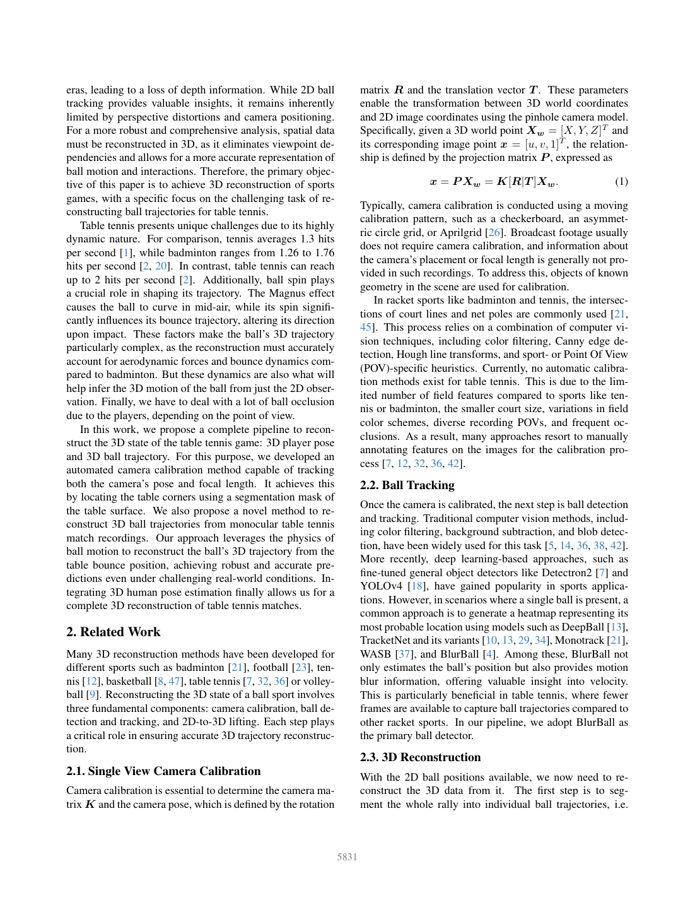
eras, leading to a loss of depth information.
因而缺少深度信息。
While 2D ball tracking provides valuable insights, it remains inherently limited by perspective distortions and camera positioning.
虽然 2D 球跟踪提供了有价值的见解，但它仍然受到透视扭曲和摄像机定位的固有限制。
For a more robust and comprehensive analysis, spatial data must be reconstructed in 3D, as it eliminates viewpoint dependencies and allows for a more accurate representation of ball motion and interactions.
为了进行更稳健和更全面的分析，必须以 3D 形式重建空间数据，因为它消除了视点依赖性并允许更准确地表示球运动和交互。
Therefore, the primary objective of this paper is to achieve 3D reconstruction of sports games, with a specific focus on the challenging task of reconstructing ball trajectories for table tennis.
因此，本文的主要目标是实现体育比赛的 3D 重建，特别关注重建乒乓球轨迹的挑战性任务。
Table tennis presents unique challenges due to its highly dynamic nature.
乒乓球由于其高度动态的性质而带来了独特的挑战。
For comparison, tennis averages 1.3 hits per second [1], while badminton ranges from 1.26 to 1.76 hits per second [2, 20].
相比之下，网球平均每秒击球 1.3 次 [1]，而羽毛球平均每秒击球 1.26 到 1.76 次 [2, 20]。
In contrast, table tennis can reach up to 2 hits per second [2].
相比之下，乒乓球每秒最多可以达到 2 次击球 [2]。
Additionally, ball spin plays a crucial role in shaping its trajectory.
此外，球的旋转在塑造其轨迹方面起着至关重要的作用。
The Magnus effect causes the ball to curve in mid-air, while its spin significantly influences its bounce trajectory, altering its direction upon impact.
马格努斯效应使球在半空中弯曲，而其旋转显著影响其弹跳轨迹，在撞击时改变其方向。
These factors make the ball’s 3D trajectory particularly complex, as the reconstruction must accurately account for aerodynamic forces and bounce dynamics compared to badminton.
这些因素使得球的 3D 轨迹特别复杂，因为与羽毛球相比，重建必须准确地考虑空气动力和弹跳动力学。
But these dynamics are also what will help infer the 3D motion of the ball from just the 2D observation.
但这些动力学也将有助于从 2D 观察中推断出球的 3D 运动。
Finally, we have to deal with a lot of ball occlusion due to the players, depending on the point of view.
此外，随观察视角不同，球员还可能大量遮挡球。
In this work, we propose a complete pipeline to reconstruct the 3D state of the table tennis game: 3D player pose and 3D ball trajectory.
在这项工作中，我们提出了一个完整的流程来重建乒乓球比赛的 3D 状态：3D 球员姿态和 3D 球轨迹。
For this purpose, we developed an automated camera calibration method capable of tracking both the camera’s pose and focal length.
为此，我们开发了一种自动相机标定方法，能够跟踪相机的姿态和焦距。
It achieves this by locating the table corners using a segmentation mask of the table surface.
该方法从球台表面的分割掩膜中定位球台角点。
We also propose a novel method to reconstruct 3D ball trajectories from monocular table tennis match recordings.
我们还提出了一种从单目乒乓球比赛录像中重建 3D 球轨迹的新方法。
Our approach leverages the physics of ball motion to reconstruct the ball’s 3D trajectory from the table bounce position, achieving robust and accurate predictions even under challenging real-world conditions.
我们的方法利用球运动的物理原理，从球台弹跳位置重建球的 3D 轨迹，即使在具有挑战性的现实条件下也能实现稳健且准确的预测。
Integrating 3D human pose estimation finally allows us for a complete 3D reconstruction of table tennis matches.
集成 3D 人体姿态估计最终使我们能够对乒乓球比赛进行完整的 3D 重建。
2. Related Work
2.相关工作
Many 3D reconstruction methods have been developed for different sports such as badminton [21], football [23], tennis [12], basketball [8, 47], table tennis [7, 32, 36] or volleyball [9].
人们已经针对不同的运动项目开发了许多 3D 重建方法，例如羽毛球 [21]、足球 [23]、网球 [12]、篮球 [8, 47]、乒乓球 [7, 32, 36] 或排球 [9]。
Reconstructing the 3D state of a ball sport involves three fundamental components: camera calibration, ball detection and tracking, and 2D-to-3D lifting.
重建球类运动的 3D 状态涉及三个基本组成部分：摄像机标定、球检测和跟踪以及 2D 到 3D 三维提升。
Each step plays a critical role in ensuring accurate 3D trajectory reconstruction.
每个步骤对于确保准确的 3D 轨迹重建都起着至关重要的作用。
2.1. Single View Camera Calibration
2.1.单视图相机标定
Camera calibration is essential to determine the camera matrix 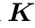
相机标定用于确定相机矩阵 以及由旋转
matrix 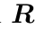 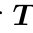
矩阵 和平移向量 定义的相机位姿。
These parameters enable the transformation between 3D world coordinates and 2D image coordinates using the pinhole camera model.
这些参数支持使用针孔相机模型在 3D 世界坐标和 2D 图像坐标之间进行转换。
Specifically, given a 3D world point 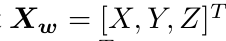 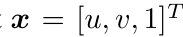 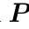
具体来说，给定一个 3D 世界点及其对应的图像点，该关系由投影矩阵定义，表示为
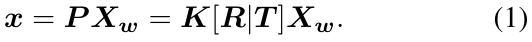
Typically, camera calibration is conducted using a moving calibration pattern, such as a checkerboard, an asymmetric circle grid, or Aprilgrid [26].
通常，相机标定是使用移动标定图案进行的，例如棋盘格、不对称圆形网格或 Aprilgrid [26]。
Broadcast footage usually does not require camera calibration, and information about the camera’s placement or focal length is generally not provided in such recordings.
转播镜头通常不需要摄像机标定，并且此类记录中通常不提供有关摄像机位置或焦距的信息。
To address this, objects of known geometry in the scene are used for calibration.
为了解决这个问题，使用场景中已知几何形状的对象进行标定。
In racket sports like badminton and tennis, the intersections of court lines and net poles are commonly used [21, 45].
在羽毛球和网球等球拍运动中，球场线和网杆的交叉点是常用的[21, 45]。
This process relies on a combination of computer vision techniques, including color filtering, Canny edge detection, Hough line transforms, and sport- or Point Of View (POV)-specific heuristics.
该过程依赖于计算机视觉技术的组合，包括色彩筛选、Canny 边缘检测、霍夫线变换以及运动或视点 (POV) 特定的启发法。
Currently, no automatic calibration methods exist for table tennis.
目前，还没有针对乒乓球运动的自动标定方法。
This is due to the limited number of field features compared to sports like tennis or badminton, the smaller court size, variations in field color schemes, diverse recording POVs, and frequent occlusions.
这是由于与网球或羽毛球等运动相比，场地特征数量有限、场地尺寸较小、场地配色方案变化、记录视角多样化以及频繁遮挡。
As a result, many approaches resort to manually annotating features on the images for the calibration process [7, 12, 32, 36, 42].
因此，许多方法采用手动标注图像上的特征来进行标定过程[7,12,32,36,42]。
2.2. Ball Tracking
2.2.球追踪
Once the camera is calibrated, the next step is ball detection and tracking.
相机标定后，下一步就是球检测和跟踪。
Traditional computer vision methods, including color filtering, background subtraction, and blob detection, have been widely used for this task [5, 14, 36, 38, 42].
传统的计算机视觉方法，包括颜色筛选、背景扣除和斑点检测，已广泛用于此任务[5,14,36,38,42]。
More recently, deep learning-based approaches, such as fine-tuned general object detectors like Detectron2 [7] and YOLOv4 [18], have gained popularity in sports applications.
最近，基于深度学习的方法，例如 Detectron2 [7] 和 YOLOv4 [18] 等微调通用目标检测器，在体育应用中越来越受欢迎。
However, in scenarios where a single ball is present, a common approach is to generate a heatmap representing its most probable location using models such as DeepBall [13], TracketNet and its variants [10, 13, 29, 34], Monotrack [21], WASB [37], and BlurBall [4].
然而，在存在单个球的场景中，一种常见的方法是使用 DeepBall [13]、TracketNet 及其变体 [10、13、29、34]、Monotrack [21]、WASB [37] 和 BlurBall [4] 等模型生成表示其最可能位置的热图。
Among these, BlurBall not only estimates the ball’s position but also provides motion blur information, offering valuable insight into velocity.
其中，BlurBall 不仅可以估计球的位置，还可以提供运动模糊信息，从而提供对速度的宝贵见解。
This is particularly beneficial in table tennis, where fewer frames are available to capture ball trajectories compared to other racket sports.
这对于乒乓球运动尤其有利，与其他球拍运动相比，用于捕捉球轨迹的帧更少。
In our pipeline, we adopt BlurBall as the primary ball detector.
在我们的流程中，我们采用 BlurBall 作为主要球检测器。
2.3. 3D Reconstruction
2.3. 3D重建
With the 2D ball positions available, we now need to reconstruct the 3D data from it.
有了可用的 2D 球位置，我们现在需要从中重建 3D 数据。
The first step is to segment the whole rally into individual ball trajectories, i.e.
首先将完整回合划分为若干独立飞行段，即
PDF Page 3PDF第3页
查看第 3 页原文、图表与公式 / Original PDF page
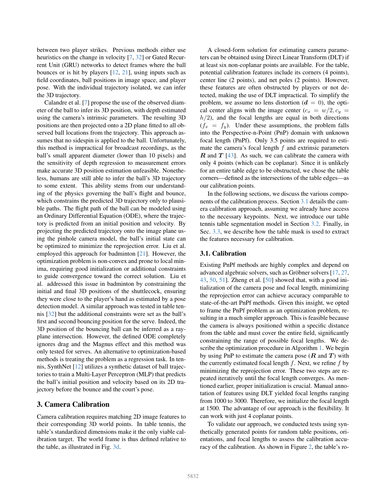
between two player strikes.
相邻两次球员击球之间的轨迹。
Previous methods either use heuristics on the change in velocity [7, 32] or Gated Recurrent Unit (GRU) networks to detect frames where the ball bounces or is hit by players [12, 21], using inputs such as field coordinates, ball positions in image space, and player pose.
以前的方法要么使用速度变化的启发式方法 [7, 32]，要么使用门控循环单元 (GRU) 网络来检测球弹跳或被球员击中的帧 [12, 21]，使用诸如场坐标、图像空间中的球位置和球员姿态等输入。
With the individual trajectory isolated, we can infer the 3D trajectory.
分离出单次飞行段后，便可推断其三维轨迹。
Calandre et al. [7] propose the use of the observed diameter of the ball to infer its 3D position, with depth estimated using the camera’s intrinsic parameters.
卡兰德雷等人 [7] 建议使用观察到的球直径来推断其 3D 位置，并使用相机的内部参数估计深度。
The resulting 3D positions are then projected onto a 2D plane fitted to all observed ball locations from the trajectory.
然后将所得的 3D 位置投影到适合轨迹中所有观察到的球位置的 2D 平面上。
This approach assumes that no sidespin is applied to the ball.
这种方法假设没有对球施加侧旋。
Unfortunately, this method is impractical for broadcast recordings, as the ball’s small apparent diameter (lower than 10 pixels) and the sensitivity of depth regression to measurement errors make accurate 3D position estimation unfeasible.
不幸的是，这种方法对于转播录音来说是不切实际的，因为球的表观直径较小（低于 10 像素），并且深度回归对测量误差的敏感性使得精确的 3D 位置估计不可行。
Nonetheless, humans are still able to infer the ball’s 3D trajectory to some extent.
尽管如此，人类仍然能够在一定程度上推断出球的 3D 轨迹。
This ability stems from our understanding of the physics governing the ball’s flight and bounce, which constrains the predicted 3D trajectory only to plausible paths.
这种能力源于我们对控制球的飞行和弹跳的物理原理的理解，这将预测的 3D 轨迹仅限制为合理的路径。
The flight path of the ball can be modeled using an Ordinary Differential Equation (ODE), where the trajectory is predicted from an initial position and velocity.
球的飞行路径可以使用常微分方程 (ODE) 进行建模，其中轨迹是根据初始位置和速度来预测的。
By projecting the predicted trajectory onto the image plane using the pinhole camera model, the ball’s initial state can be optimized to minimize the reprojection error.
通过使用针孔相机模型将预测轨迹投影到图像平面上，可以优化球的初始状态，以最大限度地减少重投影误差。
Liu et al. employed this approach for badminton [21].
刘等人。在羽毛球比赛中采用了这种方法[21]。
However, the optimization problem is non-convex and prone to local minima, requiring good initialization or additional constraints to guide convergence toward the correct solution.
然而，优化问题是非凸的并且容易出现局部极小值，需要良好的初始化或附加约束来引导收敛到正确的解决方案。
Liu et al. addressed this issue in badminton by constraining the initial and final 3D positions of the shuttlecock, ensuring they were close to the player’s hand as estimated by a pose detection model.
刘等人。通过限制羽毛球的初始和最终 3D 位置，确保它们靠近姿态检测模型估计的运动员的手，解决了羽毛球中的这个问题。
A similar approach was tested in table tennis [32] but the additional constraints were set as the ball’s first and second bouncing position for the serve.
在乒乓球比赛中测试了类似的方法[32]，但额外的约束被设置为发球时球的第一和第二弹跳位置。
Indeed, the 3D position of the bouncing ball can be inferred as a rayplane intersection.
具体来说，触台点的三维位置可由观察射线与球台平面求交得到。
However, the defined ODE completely ignores drag and the Magnus effect and this method was only tested for serves.
然而，定义的 ODE 完全忽略了阻力和马格努斯效应，并且该方法仅针对发球进行了测试。
An alternative to optimization-based methods is treating the problem as a regression task.
基于优化的方法的替代方法是将问题视为回归任务。
In tennis, SynthNet [12] utilizes a synthetic dataset of ball trajectories to train a Multi-Layer Perceptron (MLP) that predicts the ball’s initial position and velocity based on its 2D trajectory before the bounce and the court’s pose.
在网球中，SynthNet [12] 利用球轨迹的合成数据集来训练多层感知机 (MLP)，该感知器根据弹跳前的 2D 轨迹和球场姿态来预测球的初始位置和速度。
3. Camera Calibration
3. 相机标定
Camera calibration requires matching 2D image features to their corresponding 3D world points.
相机标定需要将 2D 图像特征与其对应的 3D 世界点相匹配。
In table tennis, the table’s standardized dimensions make it the only viable calibration target.
在乒乓球运动中，球台的标准化尺寸使其成为唯一可行的标定目标。
The world frame is thus defined relative to the table, as illustrated in Fig. 3d.
世界坐标系因而相对于球台定义，如图 3d 所示。
A closed-form solution for estimating camera parameters can be obtained using Direct Linear Transform (DLT) if at least six non-coplanar points are available.
若至少有 6 个非共面点，可以用直接线性变换（DLT）获得相机参数的闭式解。
For the table, potential calibration features include its corners (4 points), center line (2 points), and net poles (2 points).
对于球台，潜在的标定特征包括其角（4 点）、中心线（2 点）和网柱（2 点）。
However, these features are often obstructed by players or not detected, making the use of DLT impractical.
但这些特征经常被球员遮挡或漏检，因此难以直接使用 DLT。
To simplify the problem, we assume no lens distortion ( 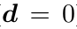 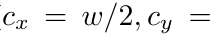 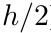 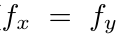
为了简化问题，我们假设镜头没有畸变（），光学中心与图像中心对齐（），并且两个方向的焦距相等（）。
Under these assumptions, the problem falls into the Perspective-n-Point (PnP) domain with unknown focal length (PnPf).
在这些假设下，问题可归为焦距未知的透视 n 点问题，即 PnPf。
Only 3.5 points are required to estimate the camera’s focal length 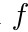 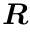 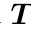
只需 3.5 个点即可估计相机焦距 及外参 、 [43]。
As such, we can calibrate the camera with only 4 points (which can be coplanar).
这样，我们就可以只用 4 个点（可以是共面的）来标定相机。
Since it is unlikely for an entire table edge to be obstructed, we chose the table corners—defined as the intersections of the table edges—as our calibration points.
由于整个球台边缘不太可能被遮挡，因此我们选择球台角（定义为球台边缘的交点）作为标定点。
In the following sections, we discuss the various components of the calibration process.
在以下部分中，我们将讨论标定过程的各个组成部分。
Section 3.1 details the camera calibration approach, assuming we already have access to the necessary keypoints.
3.1 节详细介绍了相机标定方法，假设我们已经可以访问必要的关键点。
Next, we introduce our table tennis table segmentation model in Section 3.2.
接下来，我们在 3.2 节中介绍我们的乒乓球桌分割模型。
Finally, in Sec. 3.3, we describe how the table mask is used to extract the features necessary for calibration.
最后，第 3.3 节介绍如何利用球台掩膜提取标定所需的特征。
3.1. Calibration
3.1.标定
Existing PnPf methods are highly complex and depend on advanced algebraic solvers, such as Gr¨obner solvers [17, 27, 43, 50, 51].
现有的 PnPf 方法非常复杂，并且依赖于高级代数求解器，例如 Grobner 求解器 [17,27,43,50,51]。
Zheng et al. [50] showed that, with a good initialization of the camera pose and focal length, minimizing the reprojection error can achieve accuracy comparable to state-of-the-art PnPf methods.
郑等人 [50]表明，通过对相机位姿和焦距进行良好的初始化，最小化重投影误差可以达到与最先进的 PnPf 方法相当的精度。
Given this insight, we opted to frame the PnPf problem as an optimization problem, resulting in a much simpler approach.
考虑到这一点，我们选择将 PnPf 问题构建为优化问题，从而得到一种更简单的方法。
This is feasible because the camera is always positioned within a specific distance from the table and must cover the entire field, significantly constraining the range of possible focal lengths.
这是可行的，因为摄像机始终位于距球台特定距离内，并且必须覆盖整个区域，从而极大地限制了可能的焦距范围。
We describe the optimization procedure in Algorithm 1.
我们在算法 1 中描述了优化过程。
We begin by using PnP to estimate the camera pose ( 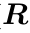 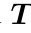 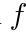
首先，在当前焦距估计 下，用 PnP 估计相机位姿（ 和 ）。
Next, we refine 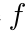
接下来，我们通过最小化重投影误差来完善。
These two steps are repeated iteratively until the focal length converges.
迭代重复这两个步骤，直到焦距收敛。
As mentioned earlier, proper initialization is crucial.
如前所述，正确的初始化至关重要。
Manual annotation of features using DLT yielded focal lengths ranging from 1000 to 3000.
使用 DLT 手动标注特征产生的焦距范围为 1000 到 3000。
Therefore, we initialize the focal length at 1500.
因此，我们将焦距初始化为1500。
The advantage of our approach is the flexibility.
我们方法的优点是灵活性。
It can work with just 4 coplanar points.
它只需 4 个共面点即可工作。
To validate our approach, we conducted tests using synthetically generated points for random table positions, orientations, and focal lengths to assess the calibration accuracy of the calibration.
我们针对随机球台位置、朝向和焦距生成合成点，测试该方法的标定精度。
As shown in Figure 2, the table’s ro-
如图 2 所示，
PDF Page 4PDF第4页
查看第 4 页原文、图表与公式 / Original PDF page
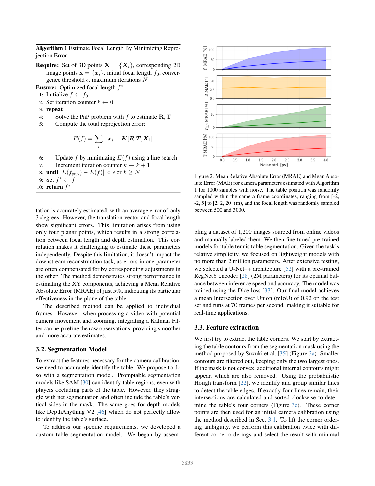
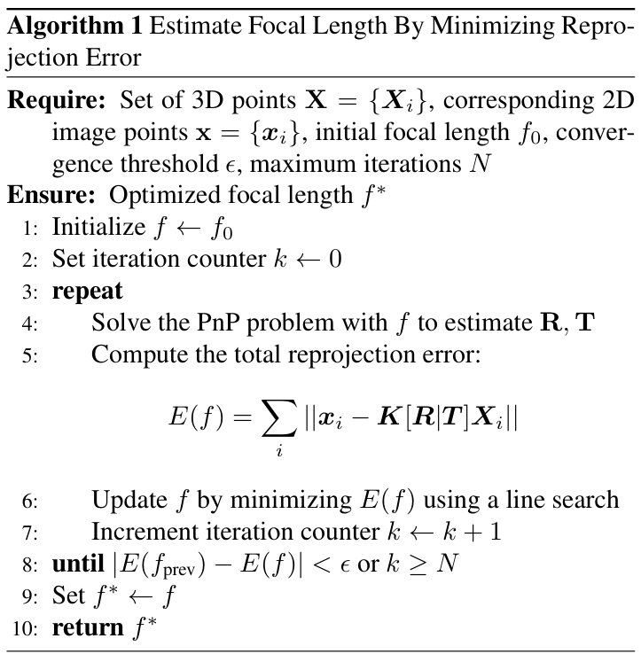
Algorithm 1 Estimate Focal Length By Minimizing Reprojection Error
算法 1 通过最小化重投影误差来估计焦距
Require: Set of 3D points 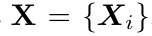
要求：一组3D点，对应2D
image points 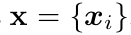 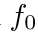 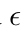 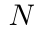 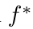
像点、初始焦距、收敛阈值、最大迭代次数 确保：优化焦距
1: Initialize 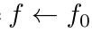 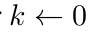 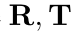
1：初始化 2：设置迭代计数器 3：重复 4：用解决PnP问题来估计 5：计算总重投影误差：
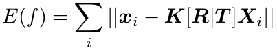
6: Update 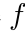 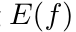 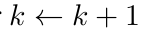 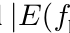 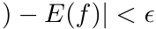 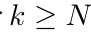 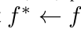 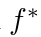
6: 采用线搜索最小化来更新 7: 递增迭代计数器 8: 直到prev或 9: 设置 10: 返回
tation is accurately estimated, with an average error of only 3 degrees.
球台旋转能够被准确估计，平均误差仅为 3°。
However, the translation vector and focal length show significant errors.
然而，平移矢量和焦距显示出明显的误差。
This limitation arises from using only four planar points, which results in a strong correlation between focal length and depth estimation.
这种限制是由于仅使用四个平面点而产生的，这导致焦距和深度估计之间存在很强的相关性。
This correlation makes it challenging to estimate these parameters independently.
这种相关性使得独立估计这些参数变得具有挑战性。
Despite this limitation, it doesn’t impact the downstream reconstruction task, as errors in one parameter are often compensated for by corresponding adjustments in the other.
尽管存在这一限制，但它不会影响下游的重建任务，因为一个参数的错误通常可以通过另一个参数的相应调整来补偿。
The method demonstrates strong performance in estimating the XY components, achieving a Mean Relative Absolute Error (MRAE) of just 5%, indicating its particular effectiveness in the plane of the table.
该方法在估计 XY 分量方面表现出强大的性能，平均相对绝对误差 (MRAE) 仅为 5%，表明其在球台平面上的特殊有效性。
The described method can be applied to individual frames.
所描述的方法可以应用于单独的帧。
However, when processing a video with potential camera movement and zooming, integrating a Kalman Filter can help refine the raw observations, providing smoother and more accurate estimates.
然而，当处理具有潜在摄像机移动和缩放的视频时，集成卡尔曼滤波器可以帮助细化原始观察结果，提供更平滑、更准确的估计。
3.2. Segmentation Model
3.2 分割模型
To extract the features necessary for the camera calibration, we need to accurately identify the table.
为了提取相机标定所需的特征，必须准确识别球台。
We propose to do so with a segmentation model.
我们使用分割模型完成这一任务。
Promptable segmentation models like SAM [30] can identify table regions, even with players occluding parts of the table.
SAM [30] 等可提示分割模型能够识别球台区域，即使部分球台被球员遮挡。
However, they struggle with net segmentation and often include the table’s vertical sides in the mask.
不过，这类模型难以分割球网，而且常将球台的竖直侧面一并纳入掩膜。
The same goes for depth models like DepthAnything V2 [46] which do not perfectly allow to identify the table’s surface.
像 DepthAnything V2 [46] 这样的深度模型也是如此，它不能完美地识别球台的表面。
To address our specific requirements, we developed a custom table segmentation model.
为满足具体需求，我们开发了专门的球台分割模型。
We began by assem-
首先，我们构建了一个数据集：
Figure 2. Mean Relative Absolute Error (MRAE) and Mean Absolute Error (MAE) for camera parameters estimated with Algorithm 1 for 1000 samples with noise.
图 2. 使用算法 1 对 1000 个带噪声样本估计的相机参数的平均相对绝对误差 (MRAE) 和平均绝对误差 (MAE)。
The table position was randomly sampled within the camera frame coordinates, ranging from [-2, -2, 5] to [2, 2, 20] (m), and the focal length was randomly sampled between 500 and 3000.
球台位置在相机框架坐标内随机采样，范围从[-2,-2,5]到[2,2,20](m)，焦距在500到3000之间随机采样。
bling a dataset of 1,200 images sourced from online videos and manually labeled them.
从在线视频收集 1200 张图像并逐一人工标注。
We then fine-tuned pre-trained models for table tennis table segmentation.
然后，我们对乒乓球桌分割的预训练模型进行了微调。
Given the task’s relative simplicity, we focused on lightweight models with no more than 2 million parameters.
鉴于任务相对简单，我们专注于参数不超过 200 万个的轻量级模型。
After extensive testing, we selected a U-Net++ architecture [52] with a pre-trained RegNetY encoder [28] (2M parameters) for its optimal balance between inference speed and accuracy.
经过大量测试，我们选择了带有预训练 RegNetY 编码器 [28]（2M 参数）的 U-Net++ 架构 [52]，以实现推理速度和准确性之间的最佳平衡。
The model was trained using the Dice loss [33].
该模型使用 Dice 损失进行训练 [33]。
Our final model achieves a mean Intersection over Union (mIoU) of 0.92 on the test set and runs at 70 frames per second, making it suitable for real-time applications.
最终模型在测试集上的平均交并比（mIoU）为 0.92，运行速度为每秒 70 帧，适合实时应用。
3.3. Feature extraction
3.3.特征提取
We first try to extract the table corners.
我们首先尝试提取桌角。
We start by extracting the table contours from the segmentation mask using the method proposed by Suzuki et al. [35] (Figure 3a).
先用 Suzuki 等人 [35] 的方法，从分割掩膜中提取球台轮廓（图 3a）。
Smaller contours are filtered out, keeping only the two largest ones.
较小的轮廓被筛选掉，只保留两个最大的轮廓。
If the mask is not convex, additional internal contours might appear, which are also removed.
如果掩膜不是凸形的，则可能会出现额外的内部轮廓，这些轮廓也会被删除。
Using the probabilistic Hough transform [22], we identify and group similar lines to detect the table edges.
使用概率霍夫变换[22]，我们识别相似的线并将其分组以检测球台边缘。
If exactly four lines remain, their intersections are calculated and sorted clockwise to determine the table’s four corners (Figure 3c).
如果只剩下四条线，则计算它们的交点并顺时针排序以确定球台的四个角（图 3c）。
These corner points are then used for an initial camera calibration using the method described in Sec. 3.1.
再按第 3.1 节的方法，用这些角点完成相机初始标定。
To lift the corner ordering ambiguity, we perform this calibration twice with different corner orderings and select the result with minimal
为消除角点排序的歧义，分别用两种排序执行标定，再选取
PDF Page 5PDF第5页
查看第 5 页原文、图表与公式 / Original PDF page
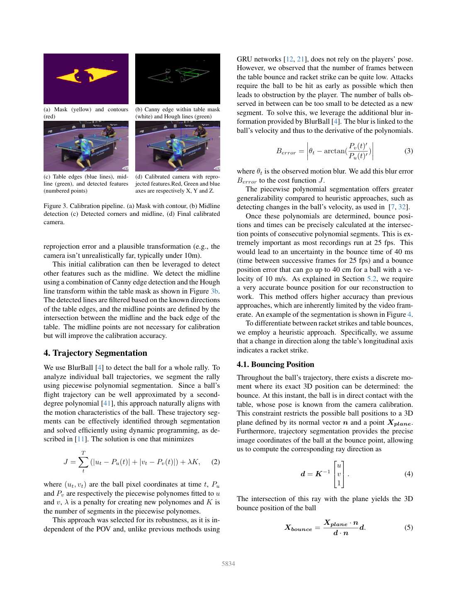
(a) Mask (yellow) and contours (red)
(a) 掩膜（黄色）和轮廓（红色）
(b) Canny edge within table mask (white) and Hough lines (green)
(b) 球台掩膜内的 Canny 边缘（白色）和霍夫线（绿色）
(c) Table edges (blue lines), midline (green), and detected features (numbered points)
(c) 球台边缘（蓝线）、中线（绿色）和检测到的特征（编号点）
(d) Calibrated camera with reprojected features.Red, Green and blue axes are respectively X, Y and Z.
(d) 具有重投影特征的标定相机。红、绿、蓝轴分别是 X、Y 和 Z。
Figure 3. Calibration pipeline.
图 3. 标定流程。
(a) Mask with contour, (b) Midline detection (c) Detected corners and midline, (d) Final calibrated camera.
(a) 具有轮廓的掩膜，(b) 中线检测，(c) 检测到的角点和中线，(d) 最终标定的相机。
reprojection error and a plausible transformation (e.g., the camera isn’t unrealistically far, typically under 10m).
重投影误差最小、且几何变换合理的结果，例如相机距离不能远得不合实际，通常应小于 10 m。
This initial calibration can then be leveraged to detect other features such as the midline.
然后可以利用该初始标定来检测其他特征，例如中线。
We detect the midline using a combination of Canny edge detection and the Hough line transform within the table mask as shown in Figure 3b.
我们结合使用 Canny 边缘检测和表格掩码内的霍夫线变换来检测中线，如图 3b 所示。
The detected lines are filtered based on the known directions of the table edges, and the midline points are defined by the intersection between the midline and the back edge of the table.
根据球台边缘的已知方向筛选检测到的线，并通过中线和表格后边缘之间的交点来定义中线点。
The midline points are not necessary for calibration but will improve the calibration accuracy.
中线点对于标定不是必需的，但会提高标定精度。
4. Trajectory Segmentation
4. 轨迹分割
We use BlurBall [4] to detect the ball for a whole rally.
利用 BlurBall [4] 检测完整回合中的球。
To analyze individual ball trajectories, we segment the rally using piecewise polynomial segmentation.
为了分析各次飞行轨迹，我们用分段多项式方法对回合进行分段。
Since a ball’s flight trajectory can be well approximated by a seconddegree polynomial [41], this approach naturally aligns with the motion characteristics of the ball.
由于球的飞行轨迹可以通过二次多项式很好地近似[41]，因此这种方法自然与球的运动特征一致。
These trajectory segments can be effectively identified through segmentation and solved efficiently using dynamic programming, as described in [11].
这些轨迹段可以通过分段有效地识别，并使用动态规划有效地求解，如[11]中所述。
The solution is one that minimizes
解决方案是最小化
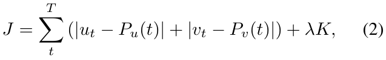
where 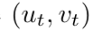 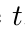 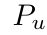 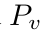 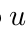 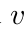 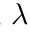
其中是时刻的球像素坐标，和分别是拟合到和的分段多项式，是创建新多项式的惩罚，是分段多项式中的段数。
This approach was selected for its robustness, as it is independent of the POV and, unlike previous methods using
选择这一方法是因为它具有较好的鲁棒性：不依赖观察视角，而且不同于先前采用
GRU networks [12, 21], does not rely on the players’ pose.
GRU 网络的方法 [12,21]，它不需要球员人体姿态作为输入。
However, we observed that the number of frames between the table bounce and racket strike can be quite low.
然而，我们观察到球台弹跳和球拍击打之间的帧数可能非常低。
Attacks require the ball to be hit as early as possible which then leads to obstruction by the player.
进攻击球往往要求尽早触球，此时球容易被球员遮挡。
The number of balls observed in between can be too small to be detected as a new segment.
这可能使触台与击球之间可观测的球位置过少，难以识别出独立轨迹段。
To solve this, we leverage the additional blur information provided by BlurBall [4].
为了解决这个问题，我们利用 BlurBall [4] 提供的附加模糊信息。
The blur is linked to the ball’s velocity and thus to the derivative of the polynomials.
模糊与球的速度有关，因此与多项式的导数有关。
where is the observed motion blur.
其中是观察到的运动模糊。
We add this blur error to the cost function .
我们将这个模糊误差添加到成本函数中。
The piecewise polynomial segmentation offers greater generalizability compared to heuristic approaches, such as detecting changes in the ball’s velocity, as used in [7, 32].
与启发式方法相比，分段多项式分割提供了更大的通用性，例如检测球速度的变化，如 [7, 32] 中所使用的。
Once these polynomials are determined, bounce positions and times can be precisely calculated at the intersection points of consecutive polynomial segments.
一旦确定了这些多项式，就可以在连续多项式段的交点处精确计算弹跳位置和时间。
This is extremely important as most recordings run at 25 fps.
这非常重要，因为大多数录制都以 25 fps 运行。
This would lead to an uncertainty in the bounce time of 40 ms (time between successive frames for 25 fps) and a bounce position error that can go up to 40 cm for a ball with a velocity of 10 m/s.
这将导致 40 ms 的弹跳时间（25 fps 的连续帧之间的时间）的不确定性，以及速度为 10 m/s 的球的弹跳位置误差可能高达 40 cm。
As explained in Section 5.2, we require a very accurate bounce position for our reconstruction to work.
正如第 5.2 节中所解释的，我们需要一个非常准确的弹跳位置才能使重建工作正常进行。
This method offers higher accuracy than previous approaches, which are inherently limited by the video framerate.
该方法比以前的方法提供了更高的精度，而以前的方法本质上受到视频帧速率的限制。
An example of the segmentation is shown in Figure 4.
图 4 显示了分段示例。
To differentiate between racket strikes and table bounces, we employ a heuristic approach.
为了区分球拍击球和球台弹跳，我们采用启发式方法。
Specifically, we assume that a change in direction along the table’s longitudinal axis indicates a racket strike.
具体来说，我们假设沿球台纵轴方向的变化表明球拍击球。
4.1. Bouncing Position
4.1.弹跳位置
Throughout the ball’s trajectory, there exists a discrete moment where its exact 3D position can be determined: the bounce.
在球的整个轨迹中，存在一个可以确定其精确 3D 位置的离散时刻：弹跳。
At this instant, the ball is in direct contact with the table, whose pose is known from the camera calibration.
此时，球与球台直接接触，其姿态可通过相机标定得知。
This constraint restricts the possible ball positions to a 3D plane defined by its normal vector and a point .
此约束将可能的球位置限制在由其法向量和点定义的3D平面内。
Furthermore, trajectory segmentation provides the precise image coordinates of the ball at the bounce point, allowing us to compute the corresponding ray direction as
此外，轨迹分割提供了球在弹跳点的精确图像坐标，使我们能够计算相应的射线方向：
The intersection of this ray with the plane yields the 3D bounce position of the ball
该射线与平面的交点产生球的 3D 弹跳位置
PDF Page 6PDF第6页
查看第 6 页原文、图表与公式 / Original PDF page
Figure 4. Segmentation of a rally.
图 4：回合的轨迹分段。
The dots represent the detected ball positions, while the vertical lines delineate different segments.
点代表检测到的球位置，而垂直线描绘不同的段。
Using heuristics, table bounces are marked in red and racket bounces in blue.
启发式规则将触台时刻标为红色、球拍击球时刻标为蓝色。
The black crosses indicate the precise bounce coordinates, determined by the intersection of the fitted second-degree polynomials.
黑色十字表示精确的弹跳坐标，由拟合的二次多项式的交集确定。
However, the computed intersection lies on the court plane, whereas the actual contact point is slightly offset due to the ball’s radius.
然而，计算出的交点位于球场平面上，而实际接触点由于球的半径而略有偏移。
This offset is particularly significant when the camera’s viewpoint is low and close to the court plane, where perspective effects amplify small vertical errors.
当摄像机的视点较低且靠近球场平面时，这种偏移尤其重要，此时透视效果会放大小的垂直误差。
We deal with this by shifting upwards by the radius of the ball with regard to the table.
我们通过将相对于球台向上移动球的半径来解决这个问题。
5. 3D Reconstruction
5. 3D 重建
Using the camera calibration and the segmented 2D ball trajectory, we reconstruct the 3D ball trajectory.
使用相机标定和分段的 2D 球轨迹，我们重建 3D 球轨迹。
To achieve this, we leverage the ball dynamics described in Section 5.1.
为了实现这一目标，我们利用第 5.1 节中描述的球动力学。
These dynamics are used to optimize the ball’s bounce velocity and spin, minimizing the reprojection error as detailed in Section 5.2.
这些动力学用于优化球的弹跳速度和旋转，最大限度地减少重投影误差，如第 5.2 节所述。
5.1. Physics Model
5.1.物理模型
The ball dynamics are divided into two categories: the airborne motion of the ball and its behavior during bounces.
球的动力学分为两类：球的空中运动及其弹跳期间的行为。
The airborne ball trajectory is defined by the following ODE [40]:
空中球轨迹由以下 ODE 定义[40]：
where is the mass of the ball, and are respectively the ball velocity and spin,
其中为球的质量，和分别为球的速度和旋转，
is the drag coefficient, is the Magnus coefficient and is the gravity vector.
为阻力系数，为马格努斯系数，为重力矢量。
The ODE in Equation (6) lacks an analytical solution due to the quadratic drag term and the Magnus force’s dependence on spin and velocity.
由于二次阻力项以及马格努斯力对旋转和速度的依赖性，方程 (6) 中的 ODE 缺乏解析解。
However, it can be solved as an initial value problem using Runge-Kutta or collocation methods.
不过，可以将其作为初值问题，采用龙格—库塔法或配点法求数值解。
The bounce is a discrete event that is not described by an ODE.
反弹是一个离散事件，无法用 ODE 描述。
It is modeled using a Coulomb friction model [6] with:
它使用库仑摩擦模型 [6] 进行建模，其中：
where , and , are respectively the ball velocity and spin before and after the bounce.
其中、、、分别为球弹起前后的速度和旋转。
The dynamic matrices , , , and will be different depending on whether the ball is rolling or sliding.
动态矩阵、、和将根据球是滚动还是滑动而不同。
The bounce type can be distinguished with the coefficient .
反弹类型可以通过系数来区分。
where is the Coefficient Of Restitution (COR), is the friction coefficient and is the radius of the ball.
其中是恢复系数（COR），是摩擦系数，是球的半径。
If , then the ball is rolling and we use the following matrices:
如果，那么球正在滚动，我们使用以下矩阵：
(9) If , then the ball is sliding and we use the following matrices:
(9) 若 ，则球在滑动，我们使用以下矩阵：
(10) Wang et al. [41] showed that, though the ball spin can be approximated by the curve in the trajectory due to the Mangus effect, it can be further refined from the change in direction after the bounce leading to accurate spin estimation.
（10）Wang 等人 [41] 指出，除了利用马格努斯效应造成的轨迹弯曲来近似估计旋转，还可以利用触台后的方向变化进一步细化旋转估计。
Though we do not have access to the 3D ball trajectory, we can observe the ball’s curve and the change in direction after the bounce.
虽然我们无法获得 3D 球轨迹，但我们可以观察球的曲线以及弹跳后方向的变化。
Since we take into account the spin in the physical model, we are able to infer the spin of the ball from
由于物理模型考虑了旋转，我们能够
PDF Page 7PDF第7页
查看第 7 页原文、图表与公式 / Original PDF page
only the 2D ball trajectory.
仅凭二维球轨迹推断球的旋转。
Pre-existing methods that infer spin from monocular recordings usually rely on the player stroke movement [19, 31].
从单目记录推断旋转的现有方法通常依赖于球员的击球运动 [19, 31]。
5.2. Reconstruction
5.2.重建
From the trajectory segmentation, we extracted the exact image position and timestamp of the ball’s bounce on the table.
从轨迹分割中，我们提取了球在球台上弹跳的准确图像位置和时间戳。
By computing the intersection of the image ray corresponding to the bounce position with the 3D table plane, we determine the precise 3D bounce position of the ball, .
通过计算弹跳位置对应的图像光线与 3D 球台平面的交点，我们确定球的精确 3D 弹跳位置，。
Unlike previous methods [12, 21, 32], which initialize their models at the start of the trajectory, we use the bounce as the initial state.
与之前的方法 [12,21,32] 在轨迹开始时初始化模型不同，我们使用反弹作为初始状态。
This approach eliminates the need to optimize for the ball’s position and instead focuses on optimizing its velocity and spin immediately before the bounce, represented as and .
这种方法无需优化球的位置，而是专注于优化弹跳前的速度和旋转，如和所示。
Using a bounce model, we compute the ball’s velocity and spin just after the bounce.
随后通过触台反弹模型，计算反弹后的球速度 和旋转 。
We then estimate the 3D positions of the ball before and after the bounce, denoted as .
然后我们估计球弹跳前后的 3D 位置，表示为。
By optimizing for the reprojection error, we reconstruct the 3D trajectory of the ball.
通过优化重投影误差，我们重建了球的3D轨迹。
We use IPopt [39] in Casadi [3] to optimize our loss function, defined as:
我们在 Casadi [3] 中使用 IPopt [39] 来优化我们的损失函数，定义为：
where represents the observed ball positions.
其中代表观察到的球位置。
The ball spin is initialized to (rad/s) and the ball velocity to (m/s).
球旋转初始化为（rad/s），球速度初始化为（m/s）。
6. 3D Pose Estimation
6. 3D姿态估计
So far, our primary focus has been on reconstructing the ball’s 3D trajectory.
到目前为止，我们的主要重点是重建球的 3D 轨迹。
While valuable on its own, this information becomes significantly more insightful when combined with player motion and stroke estimation.
虽然这些信息本身很有价值，但与球员运动和击球估计相结合时，这些信息会变得更加具有洞察力。
By linking the ball’s trajectory to the player’s movements and actions, we can gain a deeper understanding of gameplay dynamics, strategy, and shot execution.
通过将球的轨迹与球员的动作和动作联系起来，我们可以更深入地了解游戏动态、策略和击球执行。
To achieve this, we first track the players and estimate their 2D pose using RTMPose [15].
为了实现这一目标，我们首先跟踪球员并使用 RTMPose [15] 估计他们的 2D 姿态。
We then infer their 3D pose with MotionBERT [53].
然后我们使用 MotionBERT [53] 推断他们的 3D 姿态。
However, since the estimated 3D pose is expressed in camera coordinates, it must be transformed into the world frame.
然而，由于估计的 3D 位姿是用相机坐标表示的，因此必须将其转换到世界坐标系中。
Camera calibration provides the necessary rotation, but estimating the translation vector and scale factor remains a challenge.
相机标定提供了必要的旋转，但估计平移矢量和比例因子仍然是一个挑战。
We estimate by minimizing the reprojection error between the detected 2D keypoints and the projected 3D pose in the world frame:
我们通过最小化检测到的 2D 关键点和世界坐标系中投影的 3D 姿态之间的重投影误差来估计：
where represents the observed 2D joint positions, denotes the inferred 3D joint positions in the camera frame,
其中， 为观测到的二维关节位置， 为相机坐标系中估计的三维关节位置，
Figure 5. Floor contact estimation based on the vertical velocity of the players’ ankles.
图 5. 基于球员脚踝垂直速度的地面接触估计。
and is the scale factor of the projection and is a weight coefficient.
为投影比例因子，为权重系数。
is an additional constraint to ensure that the player’s feet touch the ground and that the depth information is correctly estimated.
是一个附加约束，用于确保球员的脚接触地面并正确估计深度信息。
Indeed, although the 3D pose model accurately captures lateral motion, it struggles with depth estimation relative to the camera.
事实上，尽管 3D 姿态模型可以准确地捕捉横向运动，但它在相对于相机的深度估计方面却遇到了困难。
This issue is particularly pronounced in side-view recordings, where precise depth perception is critical for reliable player tracking.
这个问题在侧视录制中尤其明显，其中精确的深度感知对于可靠的球员跟踪至关重要。
We thus define as
因此我们将定义为
right ankle
右脚踝
left ankle
左脚踝
floor contact
floor contact 〔公式下标：floor 为地面约束，contact 为接触状态〕
(13) where we approximate the ankle height as 0.1 m when the feet are touching the floor.
(13) 当脚接触地面时，我们将脚踝高度近似为0.1 m。
We define floor contact as periods when the vertical velocity of the ankles remains below a predefined threshold, indicating contact.
我们将地面接触定义为脚踝的垂直速度保持低于预定义阈值的时期，表明接触。
By constraining translation estimation to these stable frames, we obtain more accurate and consistent pose estimates.
通过将平移估计限制在这些稳定帧上，我们获得了更准确和一致的姿态估计。
Jumps would otherwise cause the estimated pose to shift backward.
否则跳跃会导致估计的姿态向后移动。
For frames where the feet are not in contact with the floor, we interpolate the translation linearly to ensure smooth motion across the sequence.
对于脚不与地面接触的帧，我们线性插值平移以确保整个序列的平滑运动。
An example of floor contact estimation is shown in Figure 5.
图 5 显示了地面接触估计的示例。
7. Experiments
7. 实验
While qualitative assessment of our pipeline can be performed through visual inspection of the reconstructions, obtaining a quantitative evaluation is considerably more challenging due to the lack of video recordings with calibrated cameras, synchronized human motion capture and 3D ball tracking.
虽然可以通过重建的目视检查对我们的流程进行定性评估，但由于缺乏标定摄像机的视频记录、同步人体动作捕捉和 3D 球跟踪，获得定量评估更具挑战性。
Therefore, we evaluate the individual components of our pipeline to the best of our ability.
因此，我们会尽最大努力评估流程的各个组成部分。
7.1. Camera Calibration
7.1.相机标定
We first evaluated the accuracy of table corner detection.
我们首先评估了球台角点检测的准确性。
For this, we manually labeled the exact positions of the ta-
为此，我们人工标注了
PDF Page 8PDF第8页
查看第 8 页原文、图表与公式 / Original PDF page
Figure 6. Continuous camera calibration from an online video.
图 6. 通过在线视频进行连续相机标定。
The darker lines are the filtered observations using a Kalman filter.
深色线是使用卡尔曼滤波器筛选后的观测值。
ble corners in 40 images distinct from the training set We achieved a Mean Absolute Error (MAE) of 2.39 1.47 px.
40 张独立于训练集的图像中的球台角点位置，得到平均绝对误差（MAE）2.39 1.47 px。
We performed camera calibration on a video with camera movement and zooming 1.
我们通过相机移动和缩放 1 对视频进行了相机标定。
The results, shown in Figure 6, demonstrate that the estimated parameters are temporally consistent.
结果如图 6 所示，表明估计的参数在时间上是一致的。
Additionally, slight variations in closely align with changes in the Z component of , as their estimations are interdependent.
此外，的微小变化与Z分量的变化密切相关，因为它们的估计是相互依赖的。
In the supplementary material, we also include multiple examples of successful camera calibration as well as examples of failure cases, which we go into more detail in Section 7.3.
在补充材料中，我们还包括多个成功相机标定的示例以及失败案例的示例，我们将在第 7.3 节中详细介绍这些示例。
7.2. 3D Ball Trajectory Reconstruction Benchmark
7.2. 3D 球轨迹重建基准
We recorded a table tennis match between two club-level players using a multi-camera system capable of tracking the ball’s 3D position at 200 Hz.
我们使用能够以 200 Hz 的频率跟踪球的 3D 位置的多摄像机系统录制了两名俱乐部级别球员之间的乒乓球比赛。
However, the system requires orange balls, which BlurBall was not trained to detect, rendering the ball detector inapplicable.
然而，该系统需要橙色球，而 BlurBall 并未接受过检测训练，因此球检测器不适用。
Despite this limitation, the recorded 3D trajectories are accurate and can be used to generate simulated 2D observations at 25 fps using the pinhole camera model.
尽管存在此限制，记录的 3D 轨迹仍然准确，并且可用于使用针孔相机模型以 25 fps 生成模拟 2D 观测结果。
To achieve this, we created 130 ball trajectories from side, oblique, and back views, introducing noise to the 2D ball position ( px) and to the blur estimation ( , px).
为了实现这一目标，我们从侧面、倾斜和后视图创建了 130 个球轨迹，向 2D 球位置 ( px) 和模糊估计 (、 px) 引入噪声。
The standard deviations were set according to the error observed in [4].
标准差是根据[4]中观察到的误差设定的。
The evaluation results are presented in Table 1. We can observe that our rally reconstruction is robust to noise.
表 1 给出了评估结果。可以看到，回合重建对噪声具有鲁棒性。
This is because, with enough observations, the constraints imposed by the
这是因为观测足够多时，
1First rally of https : / / www . youtube . com / watch ? v = nd40lIYtQmA
脚注 1：该视频的第一个回合：https://www.youtube.com/watch?v=nd40lIYtQmA
Table 1. 3D Reconstruction errors using our method
表 1. 使用我们的方法的 3D 重建误差
POV No Noise Noise
POV 无噪音 噪音
Succ. [%] MAE [cm] Succ. [%] MAE [cm]
成功率（%）；MAE（cm）；成功率（%）；MAE（cm）
Side 97.3 8.9 97.3 12.4 Oblique 91.5 14.5 89.9 17.1 Back 92.3 22.3 86.9 29.8
侧面 97.3 8.9 97.3 12.4 斜向 91.5 14.5 89.9 17.1 背面 92.3 22.3 86.9 29.8
physics filter out the noise.
物理约束能够滤除噪声。
While we can’t directly validate the estimated bounce spin due to lack of ground truth, the low reconstruction error suggests it is reasonably accurate—since spinless trajectories would differ significantly, and topspin was applied during recording as instructed.
虽然由于缺乏真值，我们无法直接验证估计的弹跳旋转，但低重建误差表明它相当准确 - 因为无旋转轨迹会显著不同，并且在记录过程中按照指示应用了上旋。
7.3. Limitations
7.3.局限性
While our camera calibration method is effective in most cases, it has certain limitations.
虽然我们的相机标定方法在大多数情况下是有效的，但它也有一定的局限性。
Failures primarily occur due to player-induced occlusions, where body contours may be misinterpreted as table edges.
失败主要是由于球员引起的遮挡而发生的，其中身体轮廓可能被误解为球台边缘。
This issue is particularly pronounced in back-view recordings, where the player frequently obstructs a significant portion of the table.
这个问题在后视录音中尤其明显，因为球员经常遮挡球台的很大一部分。
However, since players move dynamically throughout a rally, clear views of the table naturally emerge, providing reliable opportunities for calibration.
然而，由于球员在整个回合中动态移动，球台的清晰视图自然会出现，为标定提供了可靠的机会。
Additionally, if the camera’s elevation angle is too low, the calibration process may become less reliable.
此外，如果相机的仰角太低，标定过程可能会变得不太可靠。
In such cases, the segmentation model doesn’t perform as well because of the thin shape of the mask and the intersection of detected table edges becomes highly sensitive to minor errors, increasing the likelihood of calibration failure.
在这种情况下，分割模型的性能不佳，因为掩膜的形状很薄，并且检测到的球台边缘的交叉点对微小错误变得高度敏感，从而增加了标定失败的可能性。
While the ball detection method remains effective with moving cameras, the trajectory segmentation does not, as the ball’s observed motion no longer follows a polynomial trajectory.
虽然球检测方法对于移动摄像机仍然有效，但轨迹分割却不再有效，因为观察到的球运动不再遵循多项式轨迹。
Furthermore, our segmentation approach relies on second-degree polynomials, requiring the ball to be visible for at least three frames after a bounce.
此外，我们的分割方法依赖于二次多项式，要求球在弹跳后至少三帧内可见。
In some cases, this condition is not met due to occlusions caused by players or when the ball is hit back early after bouncing, limiting the effectiveness of the trajectory segmentation process.
在某些情况下，由于球员造成的遮挡或球在弹跳后过早击回，因此无法满足此条件，从而限制了轨迹分割过程的有效性。
8. Conclusion
八、结论
We developed a method capable of reconstructing the 3D trajectory of a table tennis ball from an online recording.
我们开发了一种能够根据在线记录重建乒乓球 3D 轨迹的方法。
Moreover, the camera calibration is performed automatically compared to previous approaches.
此外，与以前的方法相比，相机标定是自动执行的。
With our approach, we can make use of the vast amount of table tennis match recordings available on the internet.
通过我们的方法，我们可以利用互联网上提供的大量乒乓球比赛录像。
This can help get better player statistics or build a table tennis foundation model that could for example predict the next likely stroke or real-time win probability.
这可以帮助获得更好的球员统计数据或建立乒乓球基础模型，例如可以预测下一次可能的击球或实时获胜概率。
While our method has been tested exclusively on table tennis, it could be easily adapted for other racket sports like tennis or pickleball.
虽然我们的方法仅在乒乓球上进行了测试，但它可以很容易地适用于其他球拍运动，如网球或匹克球。
PDF Page 9PDF第9页
查看第 9 页原文、图表与公式 / Original PDF page
ACKNOWLEDGMENT
致谢
Thank you to Dieter Buechler and Jan Schneider for their help with the recording setup and to Giorgio Becherini and Chuyu Yang for participating in the recordings.
感谢 Dieter Buechler 和 Jan Schneider 协助搭建拍摄系统，感谢 Giorgio Becherini 和 Chuyu Yang 参与拍摄。